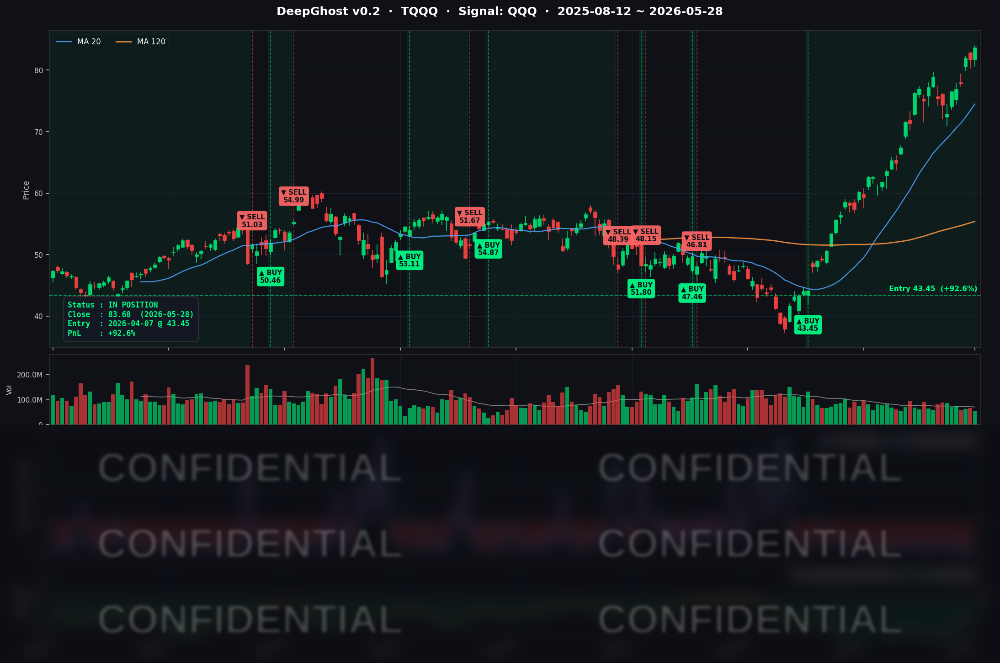

PCE 인플레이션이 3년 최고치를 기록했습니다만, AI 어닝 서프라이즈와 이란 협상 기대가 시장을 신고가로 이끌었습니다.
파티는 즐기되, 출구를 꼭 확인하시면서 즐기시기 바랍니다.
📊 오늘의 매매 신호
| 항목 | 내용 |
|---|---|
| 오늘 할 일 | ✅ 아무것도 안 해도 됩니다 |
| 포지션 상태 | 📈 TQQQ 보유 중 (IN POSITION) |
| 매수 진입일 | 2026-04-07 (51일째) |
| 진입가 → 현재가 | $43.45 → $83.68 |
| 현재 포지션 수익 | +92.59% |
TQQQ 시그널 — IN POSITION
현재 상태: 매수 포지션 유지 중 | 진입 후 누적 수익 +92.59%

모델이 강한 상승 추세를 감지하고 있으며, 시장이 뚜렷한 방향성을 유지하는 국면입니다. 4월 7일 관세 패닉 저점에서 진입한 이후 51일간 단 한 차례도 청산 신호가 발생하지 않았습니다. 오늘 PCE 인플레이션 쇼크(YoY +3.8%)에도 불구하고 국채 장기물 금리가 오히려 하락하며 기술주 우호 환경이 유지됐고, 청산 임계점까지는 여전히 충분한 여유가 있습니다.
오늘 미국 시장 — 시황 요약
지수 마감
| 지수 | 종가 | 등락률 |
|---|---|---|
| S&P 500 | 7,563.63 | +0.58% (신고가) |
| Nasdaq Composite | 26,917.47 | +0.91% (신고가) |
| Dow Jones | 50,668.97 | +0.05% |
| Russell 2000 | 2,936.57 | +0.57% |
| QQQ | $735.60 | +0.84% |
| TQQQ | $83.68 | +2.46% |
S&P 500과 Nasdaq이 동반 신고가를 경신한 날입니다. PCE 인플레이션 쇼크에도 시장은 흔들리지 않았습니다. Dow는 보합 수준으로 기술주 중심의 상승이었습니다.
국채 금리 & 연준
| 만기 | 수익률 | 전일 대비 |
|---|---|---|
| 3개월 | 3.590% | +0.5bp |
| 5년 | 4.160% | -1.7bp |
| 10년 | 4.455% | -2.6bp |
| 30년 | 4.985% | -2.6bp |
오늘 가장 흥미로운 숫자가 여기 있습니다. PCE 인플레이션이 YoY +3.8%로 근 3년래 최고치를 기록했는데도, 10년물·30년물 국채 금리는 오히려 -2.6bp씩 하락했습니다. 이란 협상 진전 보도로 에너지 가격이 하락하면서 시장이 인플레이션 압력의 구조적 완화 가능성을 먼저 읽었기 때문입니다.
단기물(3M, 3.59%)이 소폭 오른 반면 장기물이 내린 '불 플래트닝' 흐름은 시장이 단기 인플레이션보다 중장기 성장 경로를 더 신뢰하고 있다는 표현입니다. 30년물이 5% 근접 수준을 유지하고 있어 재정 부담 우려가 완전히 사라진 것은 아닙니다만, 오늘만큼은 기술주에 가장 유리한 금리 조합이 완성됐습니다.
연준 동향: PCE 3.8% 확인으로 연준의 2026년 내 금리 인하 가능성은 사실상 소멸됐습니다. 시장은 첫 인하를 2027년으로 미루는 가격을 반영하고 있습니다. 신임 Kevin Warsh 연준 의장은 5/28 당일 별도의 발언이 없었고, 전일 Lisa Cook 이사의 AI·금융안정 관련 발언은 금리 경로에 직접적 시사점 없이 중립으로 해석됐습니다.
오늘의 핵심 이슈
1. PCE 인플레이션 YoY +3.8% — 근 3년래 최고치
BEA가 발표한 4월 PCE 물가지수가 YoY +3.8%(전월 +3.5%), Core PCE YoY +3.3%를 기록했습니다. 중동 에너지 공급 충격의 물가 파급이 현실화된 수치입니다. 개인소비지출은 MoM +0.5%로 소비 탄력성은 유지됐지만, 실질 구매력은 서서히 잠식되고 있습니다. 수치가 시장 예상을 상회했음에도 주가는 상승했는데, 이란 협상 기대와 AI 어닝 서프라이즈가 매크로 역풍을 압도한 결과입니다.
2. 미-이란 60일 휴전 연장 MOU 보도 — 원유 -2.09%·시장 랠리 촉매
미국과 이란 협상단이 60일 휴전 연장 MOU에 합의했다는 보도가 오늘 시장의 핵심 촉매로 작용했습니다. Brent 원유가 $92.32로 -2.09% 하락하며 에너지 리스크 프리미엄이 일부 해소됐습니다. 그러나 백악관이 이란 측의 발표를 "완전한 날조"라고 즉각 반박하면서 진위 논란이 빚어졌습니다. Trump 대통령의 최종 승인이 아직 미결 상태입니다. 협상이 결렬될 경우 유가 재반등과 시장 변동성 확대 리스크가 잠재해 있습니다.
3. Snowflake(SNOW) +36% 폭등 → AI 엔터프라이즈 소프트웨어 섹터 랠리
Snowflake의 FY27 Q1 실적이 시장을 뒤흔들었습니다. 제품 매출 $13.3억(YoY +34%), RPO $92.1억(+38%), 순수익유지율 126%로 역대 최강의 성장을 기록하며 +36% 폭등했습니다. 이에 촉발된 AI 소프트웨어 인식 재정립으로 Microsoft +3.47%, Oracle +6%, Palantir +8%가 동반 급등했습니다. 생성형 AI의 엔터프라이즈 침투가 예상보다 빠르게 진행되고 있다는 강력한 확인입니다.
매크로 & 원자재
| 항목 | 수치 | 비고 |
|---|---|---|
| WTI (CL=F) | $88.51 | -0.19% |
| Brent (BZ=F) | $92.32 | -2.09% (이란 협상 기대) |
| 금 (GC=F) | $4,526.70 | +1.78% (인플레이션 헤지) |
| VIX | 15.74 | -3.4% (16 아래, 안정 구간) |
| 공포탐욕 지수 | 60 (Greed) | 탐욕 구간 유지 |
| PCE (4월 YoY) | +3.8% | 근 3년래 최고 |
| Core PCE (4월 YoY) | +3.3% | 연준 목표 2% 대비 크게 상회 |
VIX가 16 아래로 내려오며 시장 불안이 가라앉은 상태입니다. 금 가격이 +1.78% 상승한 것은 인플레이션 헤지 수요와 이란 협상의 불확실성이 동시에 작용한 결과입니다.
주요 종목 동향
| 종목 | 종가 | 등락률 | 비고 |
|---|---|---|---|
| AAPL | $312.51 | +0.53% | 빅테크 동반 강세 |
| NVDA | $214.25 | +0.78% | Q1 FY27 최대 실적 소화, AI 수요 구조적 강세 |
| MSFT | $426.99 | +3.47% | SNOW 서프라이즈 연동 AI 소프트웨어 랠리 |
| GOOGL | $390.13 | +0.33% | AI 검색 모멘텀 유지, 소폭 상승 |
| META | $635.29 | +0.00% | 전일 +3.74% 이후 보합 |
| AMZN | $274.00 | +0.79% | AWS·AI 인프라 기대, SNOW 서프라이즈 수혜 |
| TSLA | $442.10 | +0.40% | 소폭 강보합 |
| NFLX | $86.36 | -1.13% | 기술주 랠리에서 소외 |
| AVGO | $426.58 | +1.12% | AI 반도체·ASIC 수요 견조 |
| QCOM | $243.29 | +4.24% | Q2 FY26 EPS $2.65 어닝 비트, 자동차 부문 성장 기대 |
| INTC | $120.89 | -0.72% | Northland Capital Hold 하향, YTD +225% 랠리 후 숨고르기 |
Ghost.AI — Quantitative AI Investment
Model: DeepGhost v0.2 | Transformer-Based Deep Learning
Coverage: 13 tickers | Updated every trading day after US market close
⚠️ 본 자료는 정보 제공 목적으로만 작성되었으며 투자 권유가 아닙니다. 모든 투자의 책임은 투자자 본인에게 있습니다. 과거 성과가 미래 수익을 보장하지 않습니다.
[유의사항]
고스트에이아이 주식회사는 「자본시장과 금융투자업에 관한 법률」 제101조에 따른 유사투자자문업자로 등록된 사업자입니다.
- 본 서비스는 불특정 다수를 대상으로 발행되는 일방향 정보 제공 서비스이며, 투자자 개인의 재산 상황·투자 목적·위험 선호도를 반영한 개별 투자 조언이 아닙니다.
- 고스트에이아이 주식회사는 고객과 쌍방향 의사소통(개별 상담, 맞춤형 자문 등)을 제공하지 않습니다.
- 본 콘텐츠는 투자 권유 또는 매매 주문의 청약·청약의 권유에 해당하지 않으며, 최종 투자 판단 및 그에 따른 손익의 책임은 전적으로 투자자 본인에게 있습니다.
- 과거 시그널 성과 및 수익률은 미래 결과를 보장하지 않습니다.
고스트에이아이 주식회사 | 유사투자자문업 등록번호: 제2025-000호